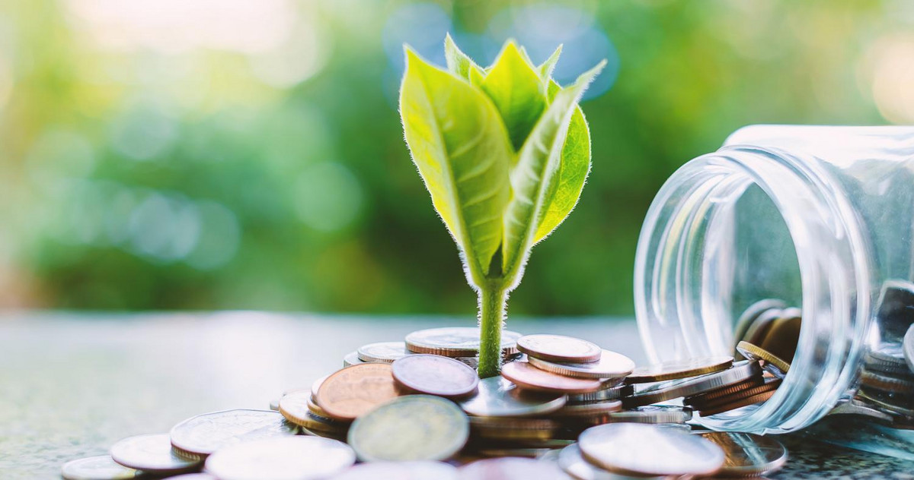

This paper asks whether the ESG performance of European banks is associated with lower credit risk in their lending portfolios. We estimate two-way fixed-effects regressions of the non-performing loan (NPL) ratio on Bloomberg ESG scores for 35 listed European commercial banks over 2015–2024 (Model 1), and on the Rated ESG Exposure Index (REEI), a novel composite that weights each bank's sectoral loan exposure by climate transition risk, hand-collected from Pillar 3 disclosures for 32 banks over 2018–2024 (Model 2).
In Model 1, the combined ESG coefficient is negative across all specifications and reaches significance under the post-2018 IFRS 9 subsample. The pillar decomposition is the most informative result: the Social pillar drives a strong negative association that survives robustness checks, while the Environmental pillar enters positive, a pattern attributable to the disclosure-weighted construction of the Bloomberg E score rather than environmental management raising credit risk. Model 2 produces a clean null: the REEI coefficient is statistically indistinguishable from zero and reverses sign on the exclusion of four distressed banks.
The paper contributes by empirically separating the market-perception channel (ESG ratings) from the portfolio-composition channel (sectoral transition exposure), and by documenting that the credit-risk-relevant content of the aggregate ESG score is concentrated in the Social pillar rather than the Environmental pillar.
Full paper, methodology, regression tables, and robustness checks are in the PDF.

Download full paper (PDF)